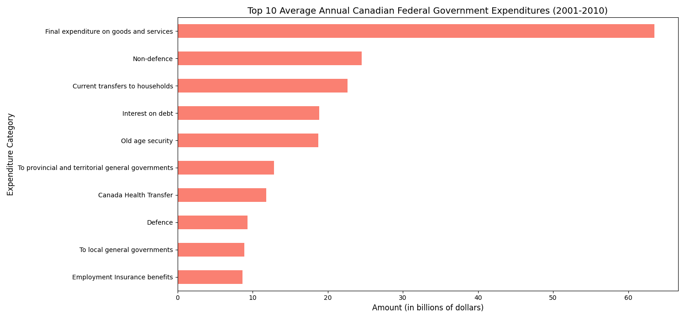
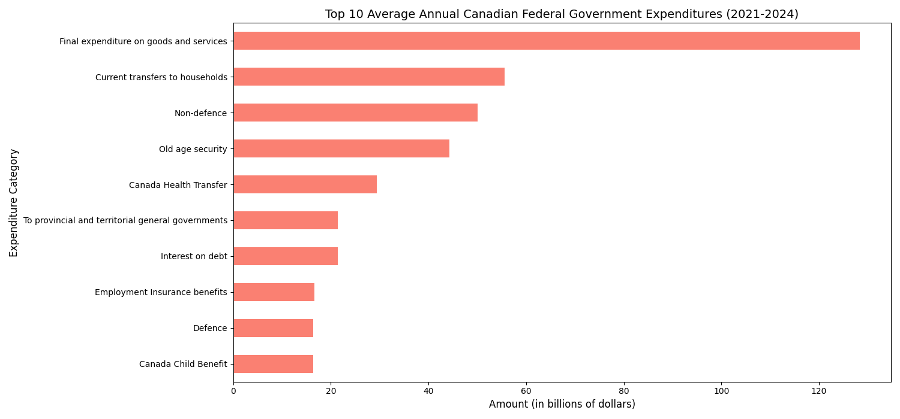
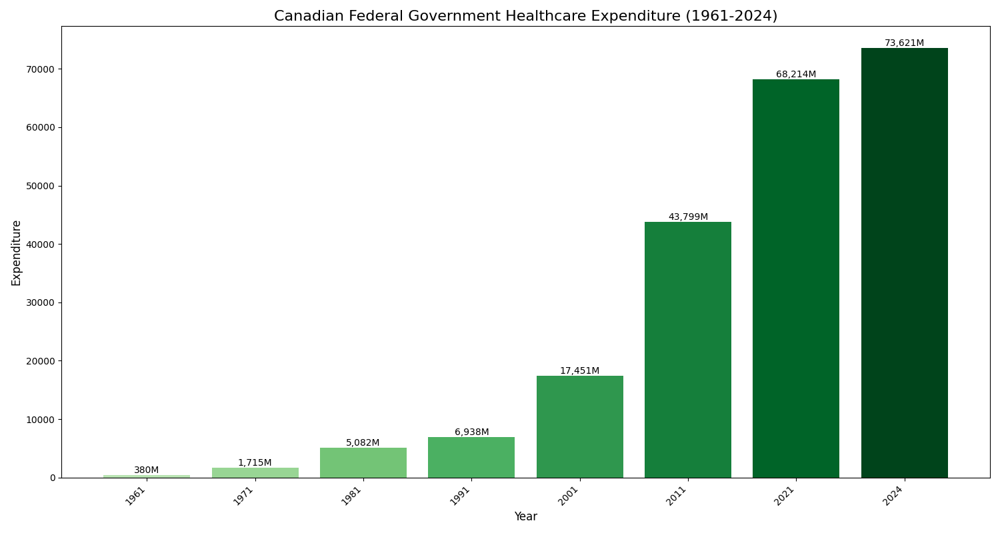

Visualizations
Top 10 Average Annual Canadian Federal Government Expenditures (1961-1970)

Top 10 Average Annual Canadian Federal Government Expenditures (1971-1980)

Top 10 Average Annual Canadian Federal Government Expenditures (1981-1990)

Top 10 Average Annual Canadian Federal Government Expenditures (1991-2000)

Top 10 Average Annual Canadian Federal Government Expenditures (2001-2010)

Top 10 Average Annual Canadian Federal Government Expenditures (2011-2020)
Top 10 Average Annual Canadian Federal Government Expenditures (2021-2024)

Health Expenditure Over Time (1961-2024)

Defence Expenditure Over Time (1961-2024)

Average Time Spent in the ER in Ontario

Numbers of Healthcare Workers in Provinces in Canada

Natural Death Reasonably Foreseeable (Track 1) vs Not Reasonably Foreseeable (Track 2) (2023)